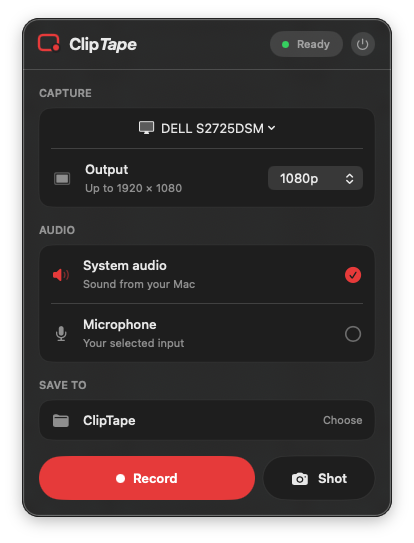

The quick answer
Use a ScreenCaptureKit-based recorder such as ClipTape. Choose a display or window, leave System audio enabled, optionally enable your microphone, and start recording. ClipTape writes the finished recording directly to an MP4 file—no virtual audio device, account, or cloud upload required.
There are two different sounds people often mean when they ask about screen-recording audio:
- System audio is the sound produced by apps on your Mac: a browser video, a game, music software, or a call.
- Microphone audio is your voice or another physical sound picked up by a microphone.
A good recorder lets you capture either source independently. ClipTape exposes separate switches for system audio and microphone input so you do not need to record your speakers through the microphone.
Can the built-in Mac recorder capture system audio?
macOS includes screen recording through the Screenshot app (Shift–Command–5) and QuickTime Player. Apple’s current instructions document choosing a microphone for audio; they do not document a built-in system-audio source in that workflow.
Those tools are excellent for a quick silent recording or a recording with your voice. If the file needs the sound produced by the Mac itself, use an app that captures system audio through Apple’s ScreenCaptureKit framework.
Record system audio with ClipTape
- Download and install ClipTape. Get ClipTape from the Mac App Store, open it from Applications, and look for its record-circle in the menu bar rather than the Dock.
- Choose what to capture. Pick an entire display or an individual window from the capture target control.
- Choose an output resolution. Keep the original dimensions or select 4K, 1440p, 1080p, or 720p. ClipTape scales down when needed; it does not invent detail beyond the source.
- Leave System audio enabled. This includes the sound produced by the selected content in the recording.
- Enable the microphone only if needed. The microphone switch is independent and macOS permission is requested only when you turn it on.
- Pick a save folder. Your MP4 will be written there. The app does not upload or import the recording into a private project library.
- Press Record. Pause and resume when needed; paused time is removed from the final video instead of becoming dead air.
- Press Stop. ClipTape finalizes an ordinary H.264 MP4 in the folder you selected.

Understand the macOS permissions
The first time a recorder captures your screen, macOS asks for Screen Recording permission. This is a system privacy control: without your approval, the app cannot see the selected display or window.
If you enable microphone capture, macOS separately asks for Microphone permission. ClipTape does not request camera, accessibility, location, contacts, calendar, photo-library, or other unrelated access.
You can review or revoke these permissions in System Settings → Privacy & Security. After changing Screen Recording permission, macOS may ask you to quit and reopen the app before the new setting takes effect.
If the recording has no system audio
Confirm that System audio was enabled
The microphone and system audio switches solve different jobs. A microphone-only recording will capture your room, not the clean output from the app you are demonstrating.
Check the source and its volume
Make sure the source app is actually producing sound while the recording is active. A muted browser tab, paused player, or app routed to a different output cannot contribute useful audio.
Review Screen Recording permission
Open System Settings → Privacy & Security → Screen Recording and confirm ClipTape is allowed. Quit and reopen ClipTape if macOS requests it.
Expect protected content to enforce its own rules
Some apps and protected video services can prevent their windows or media from being recorded. Apple notes that apps such as Apple TV might not allow their windows to be captured. A recorder should not try to bypass those protections.
Use headphones when recording a microphone
If you are capturing both system audio and your voice, headphones prevent the microphone from hearing the Mac’s speakers and adding echo or feedback.
Where does the recording go?
ClipTape writes screen and audio content directly to the local folder you choose. It has no account system, cloud service, analytics, telemetry, ad SDK, or hidden upload path. The complete source is public so those claims can be inspected rather than taken on faith.
That does not make every recording safe to share. A screen capture can contain notifications, passwords, private conversations, or personal file names. Review the finished video before sending it to anyone.
Record your Mac. Keep the file.
Free, open source, local, and built natively for macOS.